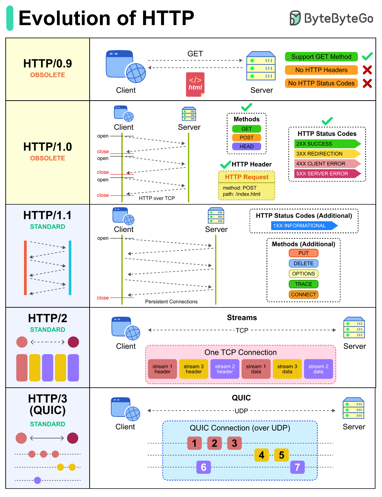

HTTP/0.9
The earliest version used a simple GET request and returned an HTML document. It did not have the headers and status codes found in later versions
IT 3203 • Research Website
Explore the major versions of HTTP and the improvements that shaped the modern web.
Early websites were mainly simple documents. As websites began using more images, scripts, and interactive features, HTTP needed to become more capable and efficient. Each version addressed limitations of earlier versions.

The earliest version used a simple GET request and returned an HTML document. It did not have the headers and status codes found in later versions
Added headers and status codes. These helped browsers understand what kind of content was returned and whether a request succeeded.
Intoduced persistent connections, allowing multiple requests to reuse a connection. This reduced the need to establish a new connection for every resource.
Introduced binary framing, multiplexing, and header compression. Multiple streams can share one TCP connection, making it easier to load pages with many resources.
Uses QUIC instead of TCP as its underlying transport. QUIC supports independent streams and can reduce certain delays caused by packet loss.